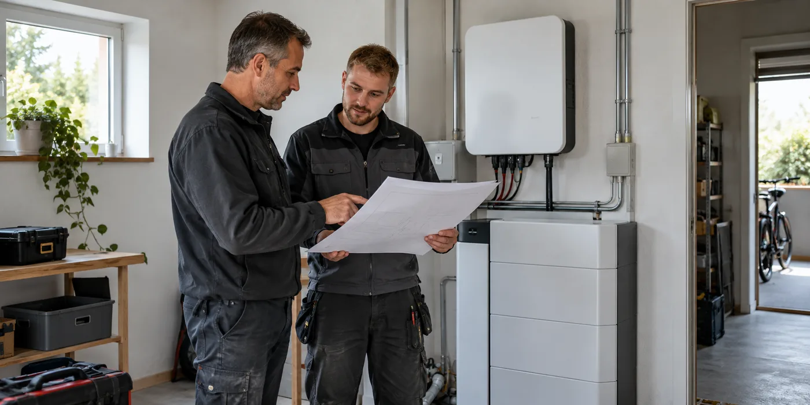

Laat het huidige systeem opnemen
Verzamel paneel- en omvormergegevens, schema’s en keuring. Vertel welke onderdelen later vervangen zijn. Vraag de batterij-installateur wat hij zelf inspecteert en welke aannames hij op de documenten baseert. Compatibiliteit moet over concrete modellen gaan, niet over de algemene mededeling dat een merk met batterijen werkt.
Bespreek de gekozen koppeling
Vraag of de bestaande omvormer behouden blijft en welke nieuwe apparatuur of meting nodig is. Laat de keuze uitleggen aan de hand van jouw installatie. Neem ook monitoring mee: wie toont productie, opslag en netafname en wie lost een verschil tussen apps op? Twee afzonderlijke dashboards maken de verantwoordelijkheden niet vanzelf duidelijk.

Werk het dossier bij
Fluvius geeft informatie over aanmelding van thuisbatterijen en vraagt onder meer keurings- en schemagegevens. Spreek af wie de bijgewerkte documenten levert. Bewaar de oude én nieuwe configuratie zodat veranderingen traceerbaar blijven. Laat bij de oplevering demonstreren dat de meetgegevens en regeling overeenkomen met het geleverde systeem.
Laat ook de storingsroute ontwerpen
Vraag wie je contacteert wanneer PV, batterij en regeling niet hetzelfde beeld tonen. Leg vast welke partij toegang tot apparatuur en data nodig heeft en hoe die toegang wordt geregeld. Maak geen gedeeld wachtwoord tot de standaardoplossing. Bij meerdere bedrijven is een duidelijke taakverdeling belangrijker dan de belofte dat de systemen technisch gekoppeld kunnen worden. Noteer die afspraken vóór de installatie zodat je ze niet pas tijdens een storing moet reconstrueren.
Bestaande apparatuur is meer dan een modelnummer
Verzamel merk en type, maar laat ook de uitgevoerde configuratie beoordelen. Een schema uit de eerste installatie kan intussen wijzigingen missen. Vertel de batterij-installateur over vervangen omvormers, extra panelen of eerdere storingen. Vraag welke delen ter plaatse worden gecontroleerd en welke informatie nog ontbreekt. De nieuwe opdracht moet kunnen vertrekken van de actuele toestand, niet van een vermoedelijk oorspronkelijke situatie. Laat toekomstige wensen daarnaast als afzonderlijke variant bespreken. Een bestaande installatie correct opnemen en tegelijk een uitbreiding ontwerpen zijn samenhangende stappen, maar beantwoorden niet precies dezelfde vraag.
De gekozen koppeling bepaalt de verdere vragen
Vraag of de bestaande PV-omvormer behouden blijft of vervangen wordt en welke extra apparatuur de oplossing vraagt. Laat de installateur uitleggen waar de batterij in de gekozen configuratie aan gekoppeld is. Een bestaand systeem kan op verschillende manieren worden aangevuld, maar de passendheid hangt af van de concrete combinatie. Vraag daarom niet alleen naar de naam van de methode. Bespreek meting, regeling, installatiekosten en compatibiliteit voor jouw apparatuur. De officiële informatie van Fluvius over batterijplaatsing en aanmelding biedt administratieve achtergrond; het ontwerp van de koppeling blijft een beoordeling van de uitvoerder.
Wie bepaalt wat de batterij ziet?
Bij opslag zijn de gebruikte meetgegevens en hun plaats in het systeem belangrijk voor de regeling. Laat beschrijven welke waarden productie, afname en injectie voorstellen en in welke app je ze terugziet. Vraag wie meetvragen onderzoekt wanneer PV-app en batterij-app niet hetzelfde beeld tonen. Een verschil hoeft niet direct een defect te zijn; het kan met meetpunt of definitie samenhangen. Verplaats zelf geen sensoren of elektrische onderdelen om dat verschil op te lossen. Verzamel bij een vraag wel dezelfde periode, relevante instellingen en meldingen. Met een afgesproken storingsroute kunnen de betrokken bedrijven gericht samenwerken.
Vraag een complete basisvariant en een uitbreidingsvariant
Laat de investering voor opslag bij de huidige installatie afzonderlijk zien van een voorstel met vervanging of uitbreiding van PV-apparatuur. Vraag welke onderdelen noodzakelijk zijn voor de gekozen opslagfunctie en welke voortkomen uit een aanvullende wens. Bespreek ook een optie zonder noodstroom als die functie niet gevraagd is, zodat verschillende doelen herkenbaar blijven. Een uitgebreider systeem kan passend zijn, maar moet niet vanzelf de enige vergelijkingsbasis worden. Bewaar de uitgangspunten van beide varianten. Dan is later duidelijk welke wijziging op verzoek toegevoegd werd en welke nodig was om de gekozen configuratie te realiseren.
Een overdracht voor twee betrokken bedrijven
Wanneer verschillende installateurs verantwoordelijk zijn voor PV en batterij, vraag dan wie schema’s, keuring, aanmelding en gebruikersuitleg levert. Laat de taakverdeling ook service en toegang tot apparatuur omvatten. Een vakman kan niet altijd een volledige beoordeling doen als gegevens alleen bij een andere partij bereikbaar zijn. Spreek af hoe relevante informatie wordt gedeeld via de daarvoor bedoelde procedures. Bewaar bij oplevering het actuele dossier en de bevestigingen van afgeronde stappen. Zo vormt de toevoeging van opslag niet alleen een nieuwe doos aan de muur, maar ook een begrijpelijk aangepast systeem dat beheerd en onderhouden kan worden.
Praktische vergelijking
| Onderdeel | Bestaande gegevens | Bij retrofit vastleggen |
|---|---|---|
| PV-configuratie | Actuele apparatuur en schema’s | Wat blijft of verandert? |
| Meting | Productie en netwaarden | Meetpunt en regeling |
| Service | Bestaand contact | Nieuwe taakverdeling |
| Administratie | Oud dossier | Nieuwe documenten en meldingen |
Een praktisch voorbeeld
De PV-installateur en batterij-installateur zijn verschillende bedrijven. Laat expliciet vastleggen wie een storing onderzoekt wanneer de batterij geen productie ziet. Daarmee voorkom je dat de vraag tussen twee helpdesks blijft hangen.
Illustratief scenario, geen klantcase.
Neem dit mee naar je gesprek
- Huidige installatie geïnspecteerd
- Concrete compatibele modellen
- Monitoring en meetverantwoordelijkheid
- Nieuwe schema’s en aanmelding
Veelgestelde vraag
Moet mijn PV-omvormer altijd vervangen worden?
Niet noodzakelijk. De gekozen koppeling en compatibiliteit bepalen de concrete oplossing.
Bron en achtergrond
Fluvius: officiële of technische achtergrond bij dit onderwerp ↗
Geraadpleegd op 13 oktober 2026. De praktische checklist en het voorbeeld zijn redactionele uitwerkingen. Fabrikantinformatie geldt voor de beschreven producten; ze is geen algemene garantie voor andere systemen.
Wat betekent dit voor jouw woning?
Gebruik de calculator voor een eerste indicatie. Een vakman beoordeelt jouw situatie en bevestigt de uitvoering en definitieve prijs.
Bekijk de thuisbatterijcalculator →